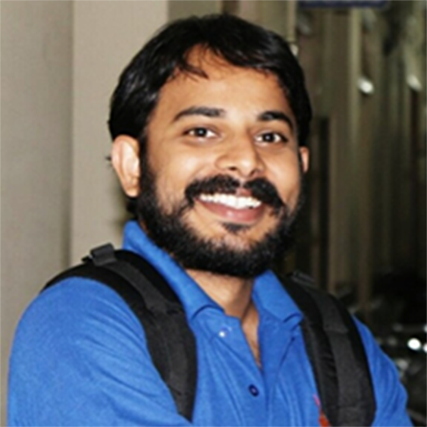

Specializes in development of consumer, industrial and next generation wearable medical products. Previously with Team Danvantri , one of the top 10 finalists at XPrize Tricorder Challenge.
Kaushik Mazumdar
Kaushik Mazumdar
He has a wide range of cross domain software development expertise in the fields of BIOS, Casino slot game development and fraud detection for telecom giants.
Gargi Mazumdar
Co-Founder
She is a software engineer with a commitment to social work. Has previous experience of working with NGOs such as School on Wheels' and 'Childline'.
Somnath Chakraborty
Branding & Marketing Lead
He is a software engineer by profession, a passionate technocrat and a hobbyist photographer. Experienced in big data analytics and mainframes.
Rahul Venugopal
Leads on Science of Learning

He develops innovative teaching methods for the digital environment. Holds a Masters in Medical electronics, and currently pursuing neuroscience research while teaching.
Swati Saxena
Curriculum Expert
She is the founder of Read To Speak, an education start-up that focuses on improving literacy for children and adult learners. Curriculum expert for languages.
Dipankar Patra
Teaching & Research Lead
He is a software engineer by profession in the field of embedded systems.
Devraj Höm Roy
Machine Learning Lead
He is designing the AI for evaluating child's learning outcomes. Teach for India fellow. Winner of short story competition at Jaipur Literature Festival 2015. A gold medalist in science Olympiad.
Rashi Dhanani
Leads on Strategy
She is the CFO at Adhyayan Foundation, focused on re-imagining learning. Previous experience within management consulting and investment banking sectors. Holds a Msc Finance from Imperial College Business School, London.
Dr. Amit Choudhury
Child Psychologist
He hold Masters in Occupational Therapy. President and founder of Proyas Therapeutic Rehabilitation Centre, an NGO supporting differently abled kids.
Ajit Sharma
Graphics Design Lead
He is pursuing B-Tech in Information Technology. Specializes in creative design and branding.